ВВЕДЕНИЕ
ПИД-регулятор был изобретён ещё в 1910 году [1]. Через 32 года, в 1942 году, Зиглер и Никольс разработали методику его настройки [2]. После появления микропроцессоров в 1980х годах развитие ПИД-регуляторов происходит нарастающими темпами. Общее количество публикаций по ПИД-регуляторам за 9 лет с 1973 по 1982 год составило 14 шт., с 1983 по 1992 год – 111 шт., а за период с 1998 по 2002 год (всего за 4 года) – 225 шт. [3]. На одном только семинаре IFAC (International Federation of Automatic Control) в 2000 году было представлено около 90 докладов, посвящённых ПИДрегуляторам [4]. Количество патентов по этой теме, содержащихся в патентной базе данных http://gb.espacenet.com, в январе 2006 года составило 364 шт.
ПИД-регулятор относится к наиболее распространённому типу регуляторов. Порядка 90-95% регуляторов [1, 5], находящихся в настоящее время в эксплуатации, используют ПИД-алгоритм. Причинами столь высокой популярности являются простота построения и промышленного использования, ясность функционирования, пригодность для решения большинства практических задач и низкая стоимость. Среди ПИД-регуляторов 64% приходится на одноконтурные регуляторы и 36% – на многоконтурные [6]. Контроллеры с обратной связью охва тывают 85% всех приложений, контроллеры с прямой связью – 6%, и контроллеры, соединённые каскадно, – 9% [6].
После появления дешёвых микропроцессоров и аналогоцифровых преобразователей в промышленных ПИД-регуляторах используются автоматическая настройка параметров, адаптивные алгоритмы, нейронные сети, генетические алгоритмы, методы нечёткой логики. Усложнилась структура регуляторов: появились регуляторы с двумя степенями свободы, с применением принципов разомкнутого управления в сочетании с обратной связью, со встроенной моделью процесса. Кроме функции регулирования, в ПИД-контроллер были введены функции аварийной сигнализации, контроля разрыва контура регулирования, выхода за границы динамического диапазона и др.
Несмотря на долгую историю развития и большое количество публикаций, остаются проблемы в вопросах устранения интегрального насыщения, регулирования объектов с гистерезисом и нелинейностями, автоматической настройки и адаптации. Практические реализации ПИД-контроллеров не всегда содержат антиалиасные фильтры, чрезмерный шум и внешние возмущения затрудняют настройку параметров. Проблемы усложняются тем, что в современных системах управления динамика часто неизвестна, регулируемые процессы нельзя считать независимыми, измерения сильно зашумлены, нагрузка непостоянна, технологические процессы непрерывны.
Далее рассмотрены только регуляторы для одномерных объектов (с одним входом и одним выходом), для медленных (тепловых) процессов, которые наиболее распространены в АСУ ТП.
КЛАССИЧЕСКИЙ ПИД-РЕГУЛЯТОР
Простейшая система автоматического регулирования с обратной связью показана на рис. 1. В ней блок R называют регулятором, P – объектом регулирования, r – управляющим воздействием, или уставкой, e – сигналом рассогласования, или ошибки, u – выходной величиной регулятора, y – регулируемой величиной.
Если выходная переменная u регулятора R описывается выражением:

где t – время, а K, Ti, Td – пропорциональный коэффициент, постоянная интегрирования и постоянная дифференцирования соответственно, то такой регулятор называют ПИДрегулятором.
В частном случае пропорциональная, интегральная или дифференциальная компоненты могут отсутствовать, и такие упрощённые регуляторы называют И, П, ПД или ПИ-регуляторами.
Распространены также следующие модификации выражения (1):

Между параметрами, входящими в выражения (1)-(3), существует простая связь. Однако отсутствие общепринятой системы параметров часто приводит к путанице. Это нужно помнить при замене одного ПИД-контроллера на другой или использовании программ настройки параметров. Мы будем пользоваться выражением (1).
Используя преобразование Лапласа при нулевых начальных условиях, передаточную функцию ПИД-регулятора можно представить в операторной форме:

где s – комплексная частота.
Амплитудно-частотная (АЧХ) и фазочастотная (ФЧХ) характеристики операторной передаточной функции (4) показаны на рис. 2. В области нижних частот АЧХ и ФЧХ определяютсяинтегральным членом, в области средних частот – пропорциональным, в области высоких – дифференциальным.
На систему автоматического регулирования могут воздействовать (рис. 3) внешние возмущения d = d(s) и шум измерений n = n(s). Внешние возмущения (влияние нагрузки, изменение температуры окружающей среды, ветер, течение воды и т.п.) обычно пространственно распределены по объекту, однако для упрощения анализа их моделируют сосредоточенным источником d(s), приложенным ко входу системы. Источник шума n(s) моделирует погрешность измерений выходной переменой y, погрешность датчика, а также помехи [7, 8], воздействующие на канал передачи сигнала с выхода системы на её вход.
Вид АЧХ и ФЧХ регулятора определяет его точность и запас устойчивости. С уменьшением интегральной составляющей Ti, как следует из рис. 2, увеличивается модуль коэффициента усиления регулятора на низких частотах (то есть при приближении к установившемуся режиму), и поэтому снижается погрешность e.
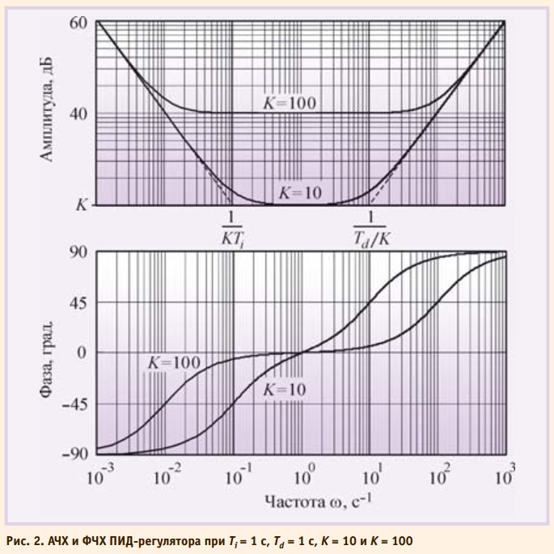
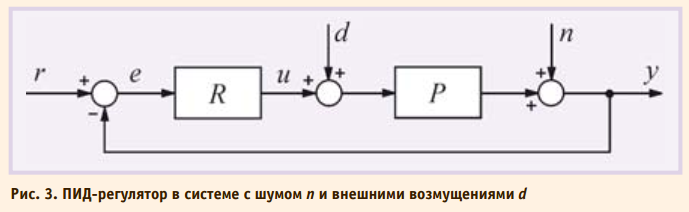
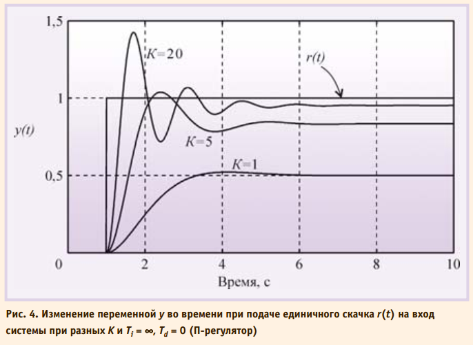
С увеличением дифференциальной составляющей Td растёт усиление на высоких частотах, что приводит к усилению шумов измерений и внешних возмущений. Поэтому дифференциальную составляющую используют только для улучшения формы переходного процесса в системе, а её практическая реализация обычно содержит фильтр высоких частот.
С ростом пропорционального коэффициента K увеличиваются модуль петлевого усиления контура регулирования и точность во всём диапазоне частот, однако падает запас по фазе и усилению, что ухудшает робастность и качество регулирования системы, а при дальнейшем увеличении K (рис. 4) возникают периодические колебания (система теряет устойчивость). Влияние шума и помех измерений n также уменьшается с ростом петлевого усиления и пропорционального коэффициента.
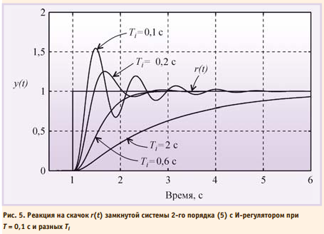
На рис. 5 показаны переходные характеристики замкнутой системы с И-регулятором (то есть при K = 0, Td = 0) и объектом второго порядка с переда точной функцией
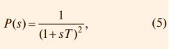
где T = 0,1 с. При больших постоянных интегрирования Ti переходная характеристика имеет вид, сходный с характеристикой апериодического звена. С уменьшением Ti растёт усиление регулятора, и когда на некоторой частоте петлевое усиление контура с обратнойсвязью приближается к 1, в системе появляются колебания.
АЧХ ПИ-регулятора можно получить из рис. 2, если отбросить правую ветвь АЧХ с наклоном +20 дБ/дек. При этом
сдвиг фаз на частотах выше 1 Гц не превысит уровень 0°. Таким образом, ПИ-регулятор имеет два существенных положительных отличия от И-регулятора: во-первых, его усиление на всех частотах не может стать меньше K, следовательно, увеличивается динамическая точность регулирования; во-вторых, по сравнению с И-регулятором он вносит дополнительный сдвиг фаз только в области низких частот, что увеличивает запас устойчивости замкнутой системы. В то же время, как и в И-регуляторе, модуль коэффициента передачи регулятора с уменьшением частоты стремится к бесконечности, обеспечивая тем самым нулевую ошибку в установившемся режиме. Отсутствие сдвига фаз на высоких частотах позволяет увеличить скорость нарастания управляемой переменной без снижения запаса устойчивости. Однако это справедливо до тех пор, пока пропорциональный коэффициент K не станет настолько большим, что увеличит усиление контура до еди ницы на частоте сдвига фаз 180° (ω180).
Переходный процесс в ПИ-регуляторе при разных сочетаниях Ti и K показан на рис. 6 и 7. При K = 0 (рис. 6) получаем И-регулятор. С ростом пропорционального коэффициента K появляется дополнительная ошибка во время переходного процесса (см. также рис. 4), которая при дальнейшем увеличении K уменьшается, однако при этом снижается запас устойчивости системы, поскольку с ростом K увеличивается усиление на частоте ω180. Это приводит к появлению затухающих колебаний в начале переходного процесса (рис. 6). Когда величина K становится достаточно большой для компенсации ослабления сигнала в объекте на частоте ω180, в системе появляются незатухающие колебания.
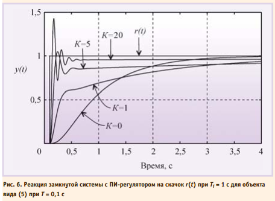
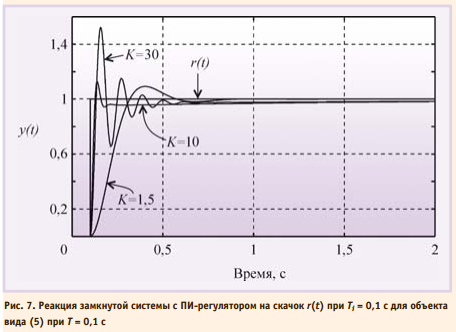
Пропорциональный коэффициент приводит к увеличению времени уста новления переходного процесса по уровню 0,99 по сравнению с И-регулятором при тех же Ti и T (рис. 6): с ростом K уменьшается наклон кривой y(t) при больших t; в частности, при t = 4 с кривая K = 1 проходит ниже кривой K = 0, а кривая K = 5 проходит ещё ниже. Объясняется это следующим. Уменьшение ошибки e в ПИ-регуляторе достигается действием одновременно как пропорционального, так и интегрального коэффициентов. Однако пропорциональный коэффициент не может свести ошибку к нулю (рис. 4). Поэтому оставшаяся ошибка e(t) уменьшается с течением времени при помощи члена
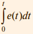
который нарастает тем медленнее, чем меньше e(t). В итоге введение пропорционального коэффициента, уменьшающего e(t), приводит к затягиванию переходного процесса.
В частотной области этот процесс можно объяснить тем, что с ростом K нуль передаточной функции 1/KTi смещается влево (рис. 2), то есть расширяется область частот, где интегральная составляющая пренебрежимо мала и ПИ-регулятор вырождается в чистый П-регулятор, которому свойственна ошибка в установившемся режиме.
В ПИД-регуляторе присутствует дифференциальный член, который, как следует из рис. 2, вносит положительный фазовый сдвиг до 90° на частотах выше K/Td. Это позволяет обеспечить устойчивость или улучшить качество регулирования системы в случаях, когда это невозможно сделать с помощью ПИ-регулятора. На рис. 8 показано влияние постоянной дифференцирования на форму отклика замкнутой системы на скачок r(t). Уменьшение амплитуды колебаний и увеличение коэффициента затухания с ростом постоянной дифференцирования Td объясняется тем, что благодаря положительному наклону АЧХ в области ω > K/Td (рис. 2) уменьшаются сдвиг фаз в контуре регулирования и петлевое усиление.
Дальнейшее увеличение постоянной дифференцирования приводит у росту усиления ПИД-регулятора на высоких частотах при ω > K/Td (рис. 2). Поскольку фазовый сдвиг, связанный с транспортной задержкой, неограниченно увеличивается с ростом частоты, то в системе даже с небольшой транспортной задержкой при увеличении Td всегда наступает момент, когда петлевое усиление на частоте фазового сдвига 180° превысит единицу. При этом на переходной характеристике замкнутой системы сначала появляются затухающие колебания (рис. 8, кривая Td = 0,75 с), затем при дальнейшем увеличении Td система переходит в колебательный режим.
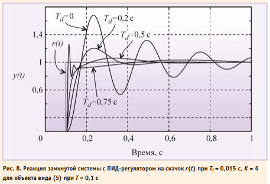
Таким образом, с ростом постоянной дифференцирования запас устойчивости замкнутой системы сначала увеличивается, затем падает.
МОДИФИКАЦИИ ПИД-РЕГУЛЯТОРОВ
Описанный в предыдущем разделе ПИД-регулятор и его частные случаи являются теоретическими идеализациями реальных регуляторов, поэтому для их практического воплощения необходимо учесть ограничения, накладываемые реальными условиями при менения и технической реализации. Кроме этого, наличие в ПИД-регуляторе всего лишь трёх регулируемых параметров (K, Ti, Td) в ряде случаев оказывается недостаточным для получения заданного качества регулирования, особенно для систем с большой транспортной задержкой L и для систем, в которых требуются одновременно высокое качество слежения за уставкой и высокое качество ослабления внешних возмущений.
Постоянно растущие требования рынка к качественным показателям ПИД-контроллеров инициируют появление множества новых модификаций ПИД-регуляторов.
Регулятор с весовыми коэффициентами при уставке
В классическом ПИД-регуляторе сигнал ошибки e равен разности между задающим воздействием r и выходной переменной объекта y: e = r – y. Однако качество регулирования можно улучшить, если ошибку вычислять отдельно для пропорциональной, дифференциальной и интегральной составляющих [5], (рис. 9):


где ep, ed, ei – ошибки для пропорциональной, дифференциальной и интегральной составляющих соответственно; b, c – настроечные весовые коэффициенты.
Уравнение такого регулятора аналогично (1):

Отметим, что весовой коэффициент при интегральной составляющей отсутствует, что необходимо для обеспечения нулевой ошибки в установившемся режиме.

Можно доказать, что регулятор, представленный на рис. 9, полностью эквивалентен регулятору, показанному на рис. 10, если блок R(s) является классическим регулятором (4), а блок F(s) имеет передаточную функцию вида:
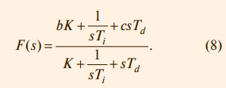
Структура полученного регулятора имеет замечательное свойство: блок F(s) не входит в контур регулирования. Это означает, что робастность, качество регулирования, реакция на шумы и внешние возмущения попрежнему будут определяться только параметрами K, Ti, Td, то есть параметры b и c блока F(s) настраиваются независимо от параметров K, Ti, Td.
Параметры b и c определяют вид АЧХ блока F(s) и позволяют улучшить качество реакции регулятора на изменение уставки r(t). На рис. 11 показана реакция замкнутой системы с описанным регулятором при разных значениях весовых коэффициентов b и c. Как видно из рисунка, изменение параметров b и c не влияет на отклик системы на шумы n(t) и внешние возмущения d(t).

Коэффициент c часто выбирают равным нулю, чтобы избежать дифференцирования случайных резких выбросов в управляющем сигнале r(t), если они возможны.
Регулятор при b = 0 и c = 0 иногда на зывают И(ПД)-регулятором, а при b = 1 и c = 0 – ПИ(Д)-регулятором.
Регулятор с формирующим фильтром для сигнала уставки
Дальнейшим усовершенствованием регулятора со структурой, показанной на рис. 10, является применение фильтра в блоке F(s), передаточная функция которого приобретает вид:

где

Здесь Tr – постоянная времени фильтра, которую выбирают равной

где mr – показатель колебательности системы без фильтра.
Пример реакции системы с регулятором, использующим формирующий фильтр, приведен на рис. 12.
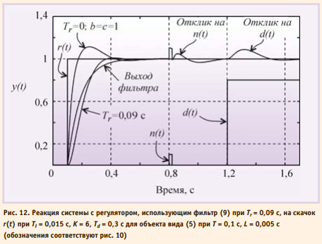
Принцип разомкнутого управления в ПИД-регуляторах
Регулятор можно построить и без использования обратной связи. Если известны действующие на систему возмущения и желаемая реакция на изменение управляющего воздействия, то в некоторых случаях можно найти такую передаточную функцию регулятора, при которой получается желаемая реакция системы. Достоинством такогоподхода является высокая скорость реагирования системы на внешние возмущения, поскольку для выработки управляющего воздействия не нужно ждать, пока управляющий сигнал пройдёт через объект и возвратится в регулятор по цепи обратной связи. Кроме того, система с разомкнутым управлением в принципе не может быть неустойчивой, поскольку в ней отсутствует обратная связь.
Недостатком является невозможность получить высокую точность при неизвестных возмущениях и низкой точности модели объекта, а также не возможность полной компенсации возмущений для объектов с транспортной задержкой и проблема физической реализуемости обратных операторов (см. раздел «Нахождение обратной динамики объекта»).
В зарубежной литературе системы с разомкнутым управлением называют системами с прямой связью. Термин «прямая связь» выбран для того, чтобы подчеркнуть отличие этого метода от метода обратной связи. Далее оба термина будут использованы как синонимы.
Достоинства разомкнутого и замкнутого управления можно объединить в одном регуляторе. Наилучшие характеристики системы получаются, если её проектировать по принципу разомкнутого управления, а обратную связь использовать только для дальнейшей минимизации погрешности системы.
В предыдущем разделе был рассмотрен частный случай применения прямой связи (рис. 10), которая реализована с помощью блока F(s).
Основным принципом применения разомкнутого управления в ПИД-регуляторах является разделение задачи проектирования на две части. Первая часть – обеспечение робастности и ослабления влияния шумов и внешних возмущений – решается с помощью параметров K, Ti, Td. Вторая часть —обеспечение заданной реакции на управляющее воздействие r(t) – решается с помощью параметров регулятора с прямой связью. Регуляторы, обеспечивающие возможность независимого решения этих двух задач, называют регуляторами с двумя степенями свободы, и на их условном изображении присутствуют два входа (рис. 13), [9].

Структура ПИДрегулятора, использующего принцип разомкнутого управления, показана на рис. 14. Здесь регулятор R спроектирован, как в системе с классическим ПИДрегулятором, а передаточные функции блоков Mu и My выбираются так, чтобы улучшить реакцию системы на входное воздействие r(t).
Принцип действия такой системы состоит в следующем. Изменение сигнала r(t) поступает на вход объекта управления u через блок Mu, минуяцепь обратной связи. Передаточная функция блока Mu выбирается таким образом, чтобы выходной сигнал системы y(t) в точности соответствовал входному сигналу y(t) = r(t), то есть чтобы сигнал ошибки e(t) был равен нулю. Поскольку в реальной системе при воздействии внешних возмущений или изменении уставки e(t) ≠ 0, то во время переходного процесса вступает в действие обычный ПИД-регулятор R,
который с помощью обратной связи пытается свести появившуюся ошибку к нулю.

Непосредственно по рис. 14 можно записать передаточную функцию системы от входа r на её выход y в виде:

Здесь первый член выбирают, как следует из описанного ранее принципа действия системы, так, чтобы в идеальных условиях e = 0 и Myr = y, то есть желаемой передаточной функцией системы является G = My. Поэтому второй член в (12) необходимо сделать равным нулю. Этого можно достичь двумя способами. Первый из них состоит в том, чтобы сделать бесконечно большим петлевое усиление PR. Чаще используют второй путь, который состоит в выборе такой передаточной функции Mu, чтобы выполнялось соотношение PM u – My = 0, то есть

Таким образом, в отличие от регулятора с обратной связью, у которого точность обеспечивается благодаря делению сигнала ошибки на большое число (усиление интегратора), в регуляторах с прямой связью точность обеспечивается путём компенсации ошибки, то есть с помощью операции вычитания.
Поскольку в системе, показанной на рис. 14, ошибка на низких частотах и в установившемся режиме равна нулю благодаря интегральному члену в ПИД-регуляторе R, высокую точность компенсации ошибки с помощью прямой связи достаточно обеспечить только на высоких частотах. Это об